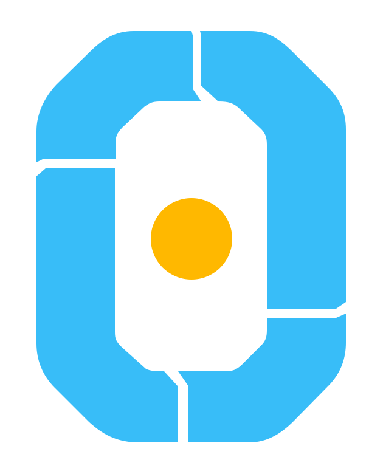
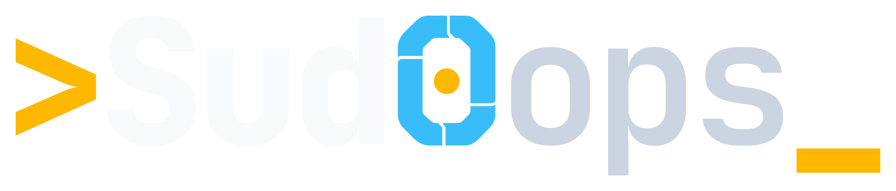
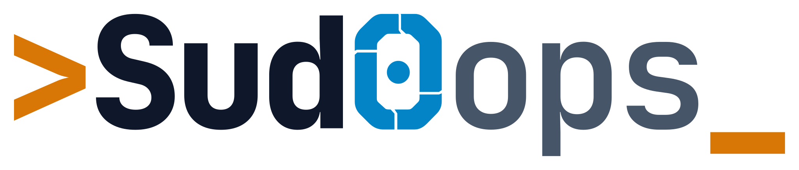
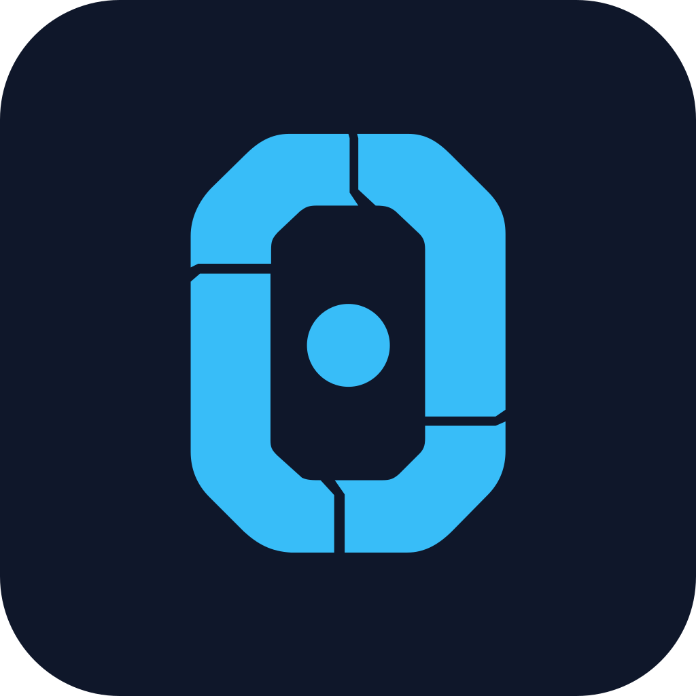
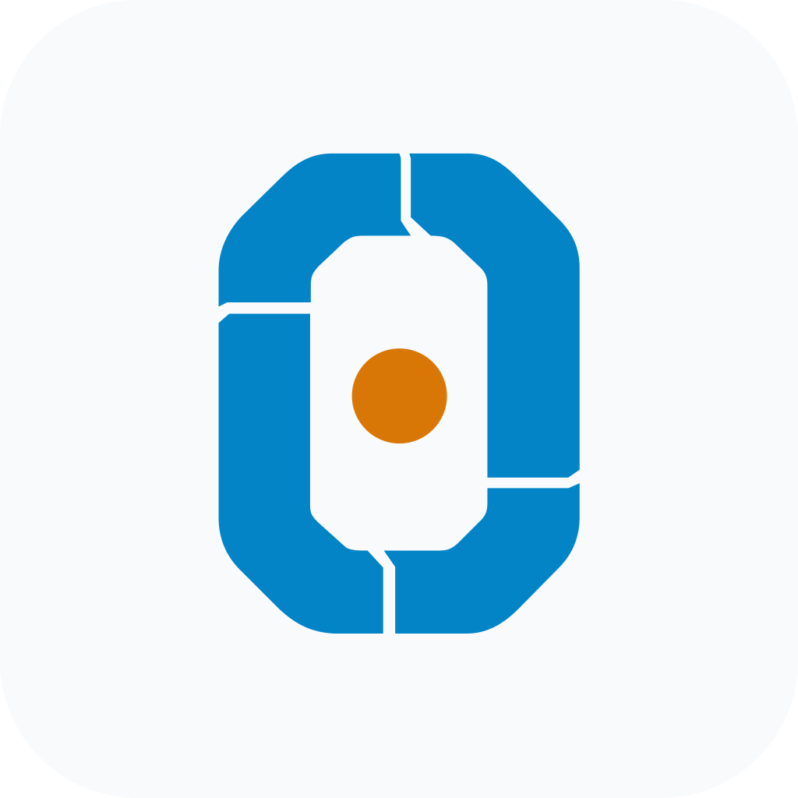
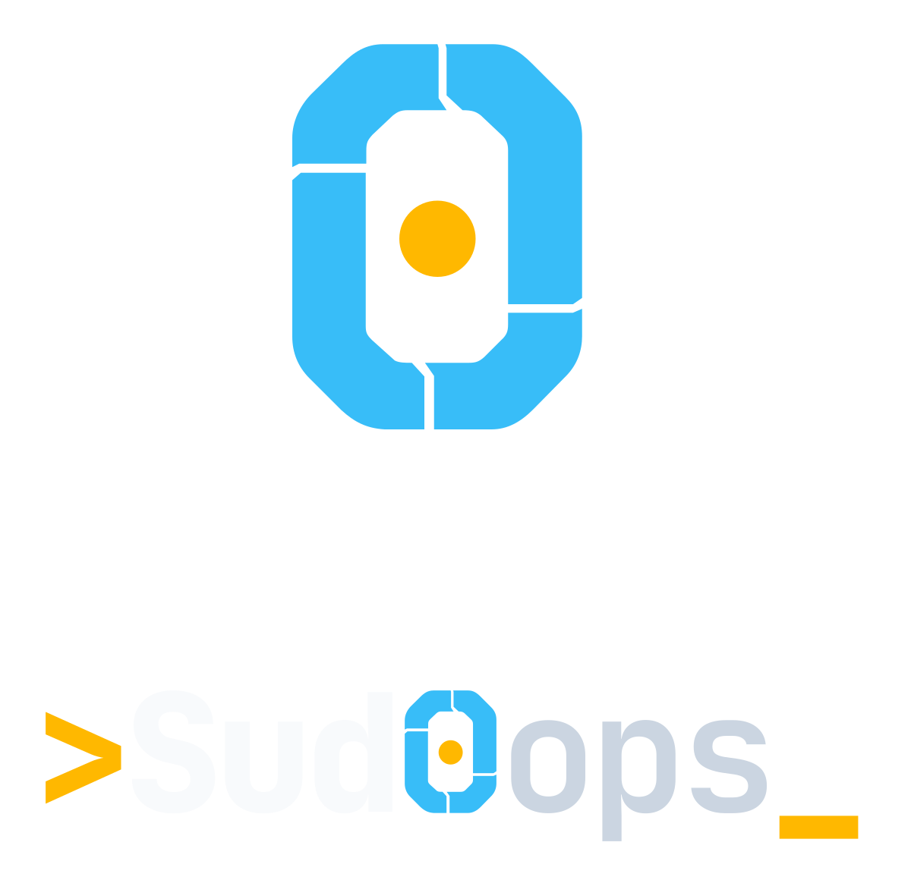

01 / APPROVED IDENTITY
Sud0ops / Builder Loop_
The symbol is the segmented blue zero. The amber prompt is only in the full wordmark.
Zero-only icon

Primary wordmark

Light wordmark

Dark app icon

Light app icon

Stacked lockup

The SVGs above are the real editable masters used to generate the exported PNGs. See guides/AGENT-HANDOVER.md for deployment steps.